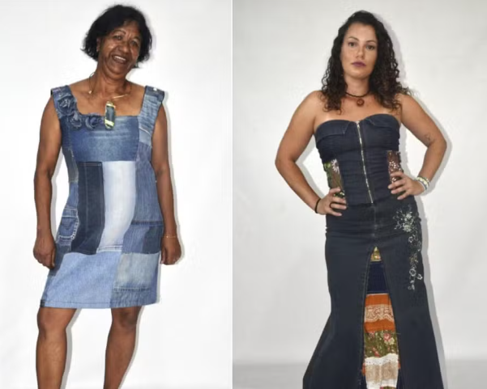

Mudanças climáticas e sustentabilidade nas comunidades: iniciativas para alcançar o ODS 11 sob a luz do Projeto Pescadores de Histórias, Cubatão-SP
Climate change and sustainability in communities: initiatives to achieve SDG 11 under the light of the Pescadores de Histórias Project, Cubatão-SP
Maria Érica Batista dos SANTOS1; Cleber Ferrão CORRÊA2; Edson Ricardo SALEME3
1 Universidade Católica de Santos/Mestranda em Direito Ambiental – mariaericaxavier@gmail.com
2 Universidade Católica de Santos /Professor Doutor do Programa Stricto Sensu – cleberferrao@unisantos.br
3 Universidade Católica de / Professor Doutor do Programa Stricto Sensu – ricasal@unisantos.br
RESUMO
Este artigo enseja investigar as mudanças climáticas e práticas de sustentabilidade em comunidades locais, com foco no ODS 11 (Cidades e Comunidades Sustentáveis), através da análise do Projeto Pescadores de Histórias em Cubatão-SP. Nesta esteira surge a questão: Seriam as iniciativas das comunidades locais capazes de auxiliar na mitigação das alterações climáticas e na implantação da sustentabilidade e assim efetivar o ODS11? Tem como objetivo geral avaliar as possibilidades de mitigação climática e o avanço das práticas sustentáveis, considerando as iniciativas da comunidade local. O estudo específico busca compreender a participação popular na implementação do ODS 11, empregando o método hipotético-dedutivo. A metodologia escolhida inclui revisão bibliográfica, análise de artigos científicos e um estudo de caso do projeto mencionado. A pesquisa destaca como a mobilização comunitária pode contribuir para a sustentabilidade urbana e as práticas de mitigação climática, oferecendo insights valiosos para outras regiões e projetos similares.
Palavras-chave: ODS11; mudanças climáticas; sustentabilidade.
ABSTRACT
This paper aims to investigate climate change and sustainability practices in local communities, with a focus on SDG 11 (Sustainable Cities and Communities), through the analysis of the Fishermen of Stories Project in Cubatão-SP. And in this wake the question arises: Would the initiatives of local communities be able to assist in the mitigation of climate change and the implementation of sustainability and thus achieve SDG11? Its general objective is to evaluate the possibilities of climate mitigation and the advancement of sustainable practices, considering the initiatives of the local community. The specific study seeks to understand popular participation in the implementation of SDG 11, using the hypothetical-deductive method. The methodology chosen includes a literature review, analysis of scientific articles and a case study of the mentioned project. The research highlights how community mobilization can contribute to urban sustainability and climate mitigation practices, offering valuable insights for other regions and similar projects.
Keywords: SDG11; climate change; sustainability.
Introdução
As mudanças climáticas impactam de maneira desproporcional as áreas mais vulneráveis das cidades, frequentemente levando ao colapso das comunidades que já enfrentam desafios socioeconômicos. A pergunta que se faz é: seriam as iniciativas das comunidades locais capazes de auxiliar na mitigação das alterações climáticas e na implantação da sustentabilidade e assim efetivar o ODS11? Em Cubatão-SP, um exemplo notável de resposta é o Projeto Pescadores de Histórias, que visa promover a sustentabilidade urbana através da criação de uma marca de roupas totalmente sustentável. Este projeto se distingue ao utilizar reuso e reciclagem de peças e materiais, incorporando a mão de obra das mulheres locais. A iniciativa não só fortalece a inclusão social e econômica, mas também se alinha com o Objetivo de Desenvolvimento Sustentável (ODS) 11, que busca transformar as cidades em comunidades mais sustentáveis. Este artigo investiga como o Projeto Pescadores de Histórias contribui para a mitigação das mudanças climáticas. Ao reutilizar materiais existentes, o projeto reduz a necessidade de novos processos industriais, minimizando o consumo de energia e a emissão de carbono. Além disso, ao evitar que roupas descartadas sejam lançadas nas margens do rio que cerca o bairro, a iniciativa ajuda a preservar o meio ambiente local. A participação popular na construção da Agenda 2030 é destacada como um fator crucial para o sucesso destas práticas sustentáveis, refletindo um modelo de engajamento comunitário essencial para enfrentar os desafios climáticos e promover uma cidade mais resiliente e sustentável.
Materiais e Métodos
Para a realização da presente pesquisa foi utilizado o método hipotético dedutivo, revisão bibliográfica e de artigos científicos, bem como de documentos da ONU e do projeto mencionado.
Resultados e Discussão
As mudanças climáticas têm efeitos profundos e multifacetados nas cidades ao redor do mundo, influenciando diversos aspectos da vida urbana. À medida que a temperatura global aumenta, as cidades enfrentam ondas de calor mais frequentes e intensas, que podem exacerbar problemas de saúde pública e aumentar a demanda por energia para refrigeração. Essas ondas de calor não afetam apenas o conforto dos cidadãos, mas também podem causar estragos significativos em infraestruturas urbanas, como redes de energia e sistemas de transporte, levando a interrupções e custos elevados para a manutenção e reparo, ao exemplo dos recentes acontecimentos no Rio Grande Sul.
A temperatura estimada como limite pelo Intergovernamental Painel Climate Changes, IPCC, cuja marca era de 1,5 graus celsius, já foi superada, colocando o mundo num paradigma de ponto sem retorno (IPCC, 2023). Além das ondas de calor, as mudanças climáticas contribuem para um aumento na frequência e intensidade dos eventos climáticos extremos, como tempestades e inundações. As cidades, que frequentemente são construídas em áreas vulneráveis, como zonas costeiras ou regiões propensas a inundações, enfrentam o desafio de proteger suas infraestruturas e comunidades desses riscos. Inundações urbanas podem resultar em danos significativos a propriedades, destruição de bens e interrupção dos serviços essenciais, como abastecimento de água e transporte.
A elevação do nível do mar é outro impacto crítico das mudanças climáticas que afeta as cidades costeiras. Com o derretimento das calotas polares e a expansão térmica dos oceanos, muitas cidades ao longo das costas estão ameaçadas pela subida do nível do mar, o que pode levar à erosão costeira e ao alagamento de áreas urbanas. Para lidar com esse problema, muitas cidades estão investindo em projetos de infraestrutura costeira, como diques e barreiras, mas esses investimentos podem ser insuficientes diante da magnitude das mudanças previstas. O relatório Surgin Seas: a warming world, emitido pela Organização das Nações Unidas em 2024, esclarece que o mar poderá subir até 21 centímetros em duas cidades do Estado do Rio de Janeiro: Rio de Janeiro e Atafona, distrito da cidade de São João da Barra. (ONU, 2024).
Neste documento são elencadas as cidades mais vulneráveis em todo o mundo, como visualmente demonstra o gráfico a seguir, desenvolvido pelo jornal O Globo a partir do relatório:
Gráfico 1: Aumento do nível do mar até 2050.
Fonte: O Globo (2024).
As mudanças climáticas também têm implicações significativas para a saúde pública nas áreas urbanas. O aumento das temperaturas, além de causar danos diretos a saúde humana, pode exacerbar problemas de qualidade do ar, contribuindo para doenças respiratórias e cardiovasculares. Artigo publicado na Revista The Lancet, estima a partir de dados da ONU, que entre os anos 2000 e 2019, 489 mil mortes por ano foram causadas pelo calor extremo (Agência Brasil, 2021).
Além disso, a mudança nos padrões de precipitação pode influenciar a propagação de doenças transmitidas por vetores, como dengue e zika, que se tornam mais prevalentes em regiões onde condições climáticas alteradas favorecem a proliferação de mosquitos.
No entanto, as cidades também têm o potencial de liderar a resposta às mudanças climáticas, aproveitando sua capacidade de inovação e adaptação. Muitas metrópoles estão adotando estratégias de desenvolvimento sustentável, como a promoção de transporte público eficiente, a implementação de sistemas de energia renovável e a criação de espaços verdes urbanos. Essas medidas não só ajudam a reduzir a pegada de carbono das cidades, mas também melhoram a qualidade de vida dos habitantes, contribuindo para comunidades mais resilientes e saudáveis.
Finalmente, a colaboração entre governos, setor privado e sociedade civil é crucial para enfrentar os desafios impostos pelas mudanças climáticas nas cidades. A participação ativa da comunidade, aliada a políticas públicas robustas e inovações tecnológicas, pode promover um desenvolvimento urbano mais sustentável e adaptável. Ao implementar soluções criativas e inclusivas, as cidades têm a oportunidade de não apenas mitigar os impactos das mudanças climáticas, mas também de se transformar em exemplos de resiliência e sustentabilidade para outras regiões ao redor do mundo.
Comunidades e sustentabilidade
As comunidades ao redor do mundo enfrentam uma série de vulnerabilidades que podem ser exacerbadas por fatores econômicos, sociais e ambientais. A vulnerabilidade comunitária refere-se à capacidade limitada de uma comunidade para enfrentar, adaptar e se recuperar de impactos adversos, como desastres naturais, crises econômicas e mudanças climáticas. Em muitas regiões, essas vulnerabilidades são acentuadas por desigualdades sociais e econômicas, que afetam desproporcionalmente os grupos mais pobres e marginalizados, tornando-os mais suscetíveis a impactos negativos e menos capazes de se recuperar rapidamente.
Em contextos urbanos e rurais, as comunidades vulneráveis frequentemente enfrentam desafios relacionados à infraestrutura deficiente, acesso limitado a serviços básicos e uma falta de recursos para investir em medidas preventivas e adaptativas. Por exemplo, áreas informais e comunidades de baixa renda podem ter maior risco de danos devido a construções precárias e a uma menor capacidade de resposta a desastres. Além disso, a falta de acesso a informações e educação pode agravar a exposição a riscos e limitar a capacidade de tomada de decisão informada.
A sustentabilidade emerge como uma abordagem essencial para abordar essas vulnerabilidades e promover a resiliência comunitária. O conceito de sustentabilidade nasce 1987, em Brutland, onde restou definido como sendo desenvolvimento sustentável, aquele que atende às necessidades do presente sem comprometer a capacidade das gerações futuras de atender às suas próprias necessidades (ONU, 1987, p. 41).
Práticas sustentáveis visam atender às necessidades presentes sem comprometer a capacidade das futuras gerações de satisfazerem suas próprias necessidades. Em comunidades vulneráveis, isso pode incluir a implementação de soluções que melhorem a infraestrutura, promovam a segurança alimentar e garantam o acesso a recursos naturais de forma equitativa. Sustentabilidade não se limita apenas ao meio ambiente, mas também abrange aspectos sociais e econômicos, promovendo a justiça e a inclusão.
Muitas são as possibilidades a serem implementadas, entre elas, um exemplo de sustentabilidade aplicada é a promoção de práticas de construção verde e regenerativa, que não só reduzem os impactos ambientais, mas também melhoram as condições de vida nas comunidades. Projetos de habitação sustentável podem oferecer estruturas mais seguras e eficientes, reduzindo a exposição a riscos naturais e promovendo um ambiente mais saudável. Da mesma forma, iniciativas de agricultura urbana e sistemas alimentares locais podem ajudar a fortalecer a segurança alimentar e reduzir a dependência de cadeias de suprimento vulneráveis.
A integração da sustentabilidade nas políticas públicas e nos planos de desenvolvimento é crucial para enfrentar a vulnerabilidade comunitária de forma eficaz. Isso inclui a promoção de políticas que incentivem a participação comunitária, o planejamento urbano inclusivo e a alocação equitativa de recursos. Além disso, o desenvolvimento de capacidades locais e a educação em práticas sustentáveis ajudam as comunidades a se tornarem mais adaptáveis e a enfrentar desafios com maior autonomia e eficácia.
Por fim, a colaboração entre governos, organizações não governamentais e o setor privado é fundamental para implementar soluções sustentáveis que realmente atendam às necessidades das comunidades vulneráveis. Parcerias eficazes podem fomentar inovações e práticas que aumentem a resiliência, melhorem a qualidade de vida e promovam um desenvolvimento mais equitativo e sustentável. Ao adotar uma abordagem integrada e colaborativa, é possível criar comunidades mais robustas e preparadas para enfrentar os desafios do presente e do futuro.
O Caso do Projeto Pescadores de Histórias
Projeto "Pescadores de História" em Cubatão é uma iniciativa que visa a preservação e valorização do patrimônio cultural e histórico das comunidades pesqueiras na região de Cubatão, no estado de São Paulo, Brasil. A cidade de Cubatão é conhecida por sua proximidade com o estuário do Rio Santos e sua importância histórica e econômica para a pesca.
Nascido do desejo de líderes comunitários e moradores, a iniciativa se deu visando a proteção do ambiente a partir do resgaste da memória local e do intuito de retirar das ruas os jovens do bairro da Vila dos Pescadores em situação de vulnerabilidade.
O projeto se concentra em documentar e preservar as narrativas, conhecimentos e práticas tradicionais dos pescadores locais. O projeto busca resgatar histórias e tradições que estão em risco de serem esquecidas devido às mudanças nas práticas pesqueiras e à modernização. Ele é fundamental para entender como as comunidades pesqueiras lidam com as transformações ambientais e sociais, incluindo os impactos das mudanças climáticas e a pressão de urbanização.
Além de preservar o conhecimento tradicional, o projeto também visa promover a conscientização sobre a importância da sustentabilidade e da conservação dos recursos naturais. Através de entrevistas, registros e eventos culturais, não apenas documentando o passado, mas também buscando conectar as novas gerações com a rica herança cultural e ambiental da pesca na região.
O Ateliê da Maré é uma iniciativa importante dentro do Projeto "Pescadores de História". Este ateliê se destaca por seu papel na preservação e promoção da cultura pesqueira local através da arte e da educação. Aqui estão alguns detalhes sobre como o Ateliê da Maré contribui para o projeto:
E que pese, seja o Ateliê da Maré , um desdobramento do projeto principal, vem crescendo e carrega consigo objetivos e funções proprias, como:
Preservação Cultural: espaço dedicado à preservação e valorização das tradições culturais das comunidades pesqueiras. Ele atua como um centro de documentação e registro das práticas e saberes tradicionais, além de criar uma plataforma para a expressão artística relacionada à cultura pesqueira.
Educação e Capacitação: oferece atividades educativas e workshops para a comunidade local, incluindo cursos de arte, oficinas de artesanato e eventos culturais. Essas atividades ajudam a transmitir o conhecimento tradicional para as novas gerações e promovem a inclusão social.
Criação e Exposição de Arte: Os artistas locais, muitos dos quais são pescadores ou têm vínculos com a pesca, utilizam o ateliê para criar obras de arte inspiradas no cotidiano e nas tradições pesqueiras. As exposições realizadas no ateliê permitem que a comunidade e os visitantes conheçam e apreciem a riqueza cultural e artística da região.
Engajamento Comunitário: serve como um ponto de encontro para a comunidade, incentivando a participação ativa dos moradores em projetos culturais e eventos. Isso fortalece os laços comunitários e promove um sentimento de pertencimento e identidade entre os participantes.
Sustentabilidade e Conscientização: Através das suas atividades, o ateliê também contribui para a conscientização sobre questões ambientais e a importância da sustentabilidade. Muitas das obras e iniciativas do ateliê abordam temas relacionados à conservação dos recursos marinhos e à proteção do meio ambiente.
Documentação e Pesquisa: O ateliê realiza pesquisas e documentações sobre a história e as práticas pesqueiras da região, contribuindo para a base de conhecimento do Projeto "Pescadores de História". Esses esforços ajudam a preservar a memória coletiva e a criar um registro valioso para futuras gerações.
Dentro do Ateliê, foi criada a marca UÇÁ, que desenvolve a criação de uma grife de roupas sustentáveis, a partir de reuso e reciclagem.
Figura 1: Divulgação do Lançamento Uçá.
Fonte: Instagram do Instituto ISAC (@isac.pescadoresdehistorias).
Importância no Contexto do Projeto
O Ateliê da Maré é, sem dúvida, um componente essencial do Projeto "Pescadores de História" uma vez que une arte, educação e cultura para manter viva a herança pesqueira de Cubatão. Ao criar um espaço onde a tradição e a modernidade se encontram, o ateliê não só preserva a história local, mas também inspira novas formas de engajamento e expressão cultural.
A Moda Uçá é uma iniciativa cultural que possui um foco específico na criação e promoção de moda inspirada na cultura pesqueira local. Inclusive o nome da marca remete-se ao nome de um pequeno crustáceo, que vive na região.
O Conceito da Moda Uçá desdobra-se nos pilares:
Inspiração Cultural: é inspirada nas tradições e no cotidiano das comunidades pesqueiras de Cubatão. O nome "Uçá" refere-se ao nome de um tipo de caranguejo encontrado na região, simbolizando a conexão com o ambiente marinho e a cultura local. A moda desenvolvida dentro desse projeto frequentemente incorpora elementos tradicionais, símbolos e materiais que refletem a vida e o trabalho dos pescadores.
Artesanato e Sustentabilidade: valoriza o uso de técnicas artesanais e materiais sustentáveis. Isso pode incluir o uso de tecidos reciclados, técnicas de costura tradicionais e adornos feitos à mão, refletindo um compromisso com práticas sustentáveis e com a preservação de técnicas culturais.
Valorização da Identidade Local: Um dos principais objetivos da Moda Uçá é promover a identidade cultural local através da moda. Ao criar roupas e acessórios que representam a cultura pesqueira de Cubatão, o projeto ajuda a preservar e compartilhar a herança cultural da região com um público mais amplo.
Integração com o Ateliê da Maré: A Moda Uçá se beneficia do suporte e da infraestrutura do Ateliê da Maré, onde os artesãos e designers podem trabalhar em seus projetos. O ateliê oferece um espaço para a produção das peças e para a realização de eventos de lançamento e exposições, integrando a moda com outras formas de expressão cultural.
Empoderamento Comunitário: O projeto também contribui para o empoderamento das pessoas envolvidas. Muitos dos criadores e trabalhadores na Moda Uçá são membros da comunidade pesqueira local, e o projeto proporciona oportunidades para que eles desenvolvam habilidades, gerem renda e participem ativamente na promoção de sua cultura.
Eventos e Exposições: A Moda Uçá frequentemente organiza desfiles de moda, exposições e eventos culturais para apresentar suas coleções. Esses eventos não só celebram o trabalho dos criadores locais, mas também atraem visitantes e aumentam a conscientização sobre a importância da preservação cultural e da moda sustentável.
Impacto e Importância
Nota-se facilmente que a Moda Uçá é mais do que uma simples linha de roupas; é um projeto cultural que une moda, arte e identidade local. Ele oferece uma plataforma para que a cultura pesqueira de Cubatão seja reconhecida e apreciada, ao mesmo tempo em que promove práticas sustentáveis e empodera a comunidade local. Ao valorizar e divulgar o patrimônio cultural através da moda, a Moda Uçá contribui para a preservação e a celebração das tradições locais de uma maneira inovadora e acessível.
Figura 2: Moda Uçá desenvolvida pelo Ateliê da Maré.

Desta forma, nota-se que Moda Uçá pode contribuir significativamente para o alcance do Objetivo de Desenvolvimento Sustentável 11 (ODS 11) da Agenda 2030 da ONU, que visa "Tornar as cidades e os assentamentos humanos inclusivos, seguros, resilientes e sustentáveis”
Suas contribuições passam desde o conceito de reuso e reciclagem, até promoção cultural e mitigação das mudanças climáticas, vez que economiza nas emissões de carbono decorrentes da convencional indústria têxtil.
O projeto também contribui positivamente quando chama e une os moradores em torno de um interesse comum, quer seja a inclusão dos mais vulneráveis, desde jovens até portadores de necessidades especiais, quer tornando-os mais resilientes e sustentáveis ante ao desenvolvimento econômico decorrente do projeto que passa a ser divido entre os envolvidos.
Ademais a ampla divulgação do projeto nas plataformas digitais e redes sociais, vem aumentando o acesso ao conhecimento da marca e o despertar de uma consciência mais sustentável e alternativa, não apenas para os moradores locais, mas para o Brasil e possivelmente para o mundo.
Conclusão
Conclui-se, portanto, que marca Uçá, criada dentro do Ateliê da Maré, por sua vez desdobramento do Projeto “Pescadores de História”, desenvolve ativamente um papel essencial para atingir-se o ODS 11, criando cidades e comunidades sustentáveis.
Ainda não há dados estatísticos oficiais sobre a redução da vulnerabilidade, mas a presidente do Projeto Sra. Marli, afirmou em evento de lançamento da marca que os resultados são sensíveis na melhoria da ocupação dos inscritos no projeto e na redução da vulnerabilidade, principalmente feminina.
A sustentabilidade avençada pelo projeto estende-se além das fronteiras da comunidade, antes apenas bairro marginal do município, projetando-a de forma ampla e positiva no cenário econômico e da resiliência ambiental.
De sorte que, uma comunidade unidade unida em defesa e a serviço da proteção de sua memória, de seus jovens e mulheres, da preservação ambiental do ambiente aquático e munido de práticas de sustentabilidade e educação são capazes de revolucionar a cultura local, bem como trazer resultados econômicos e sociais como frutos.
Referências
AGENCIA BRASIL. Últimas notícias The Lancet.
CUBATÃO. Festival Vida no Mangue’ acontece neste final de semana na Vila dos Pescadores.
GLOBO. GRAFICO 1.
GLOBO. PortalG1. Projeto social cria marca de roupas sustentáveis desenvolvidas por alunos em situação de vulnerabilidade.
ONU, IPCC. Relatorio 2023.
ONU. Surging seas: in a warming world. Agosto de 2024. Disponivel em: https://static.poder360.com.br/2024/08/onu-elevacao-nivel-oceanos-26ago2024.pdf. Acesso em: 07 set. 2024.
ONU. Relatório Brutland, 1987.
SantaPortal. Festival une meio-ambiente, cultura, moda, empreendedorismo e tradição. Disponível em: Festival une meio-ambiente, cultura, moda, empreendedorismo e tradição | Santa Portal. Acesso em: 04 set. 2024.